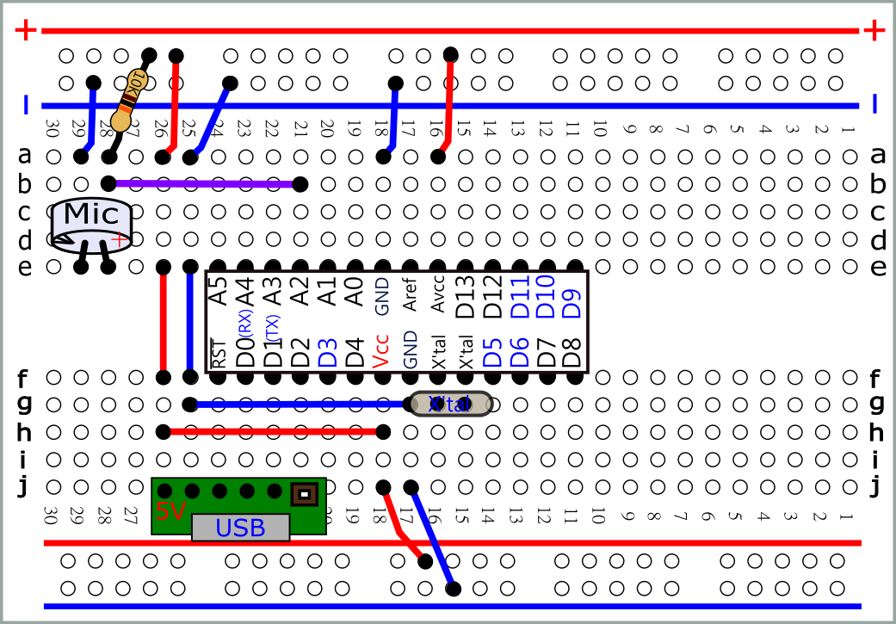
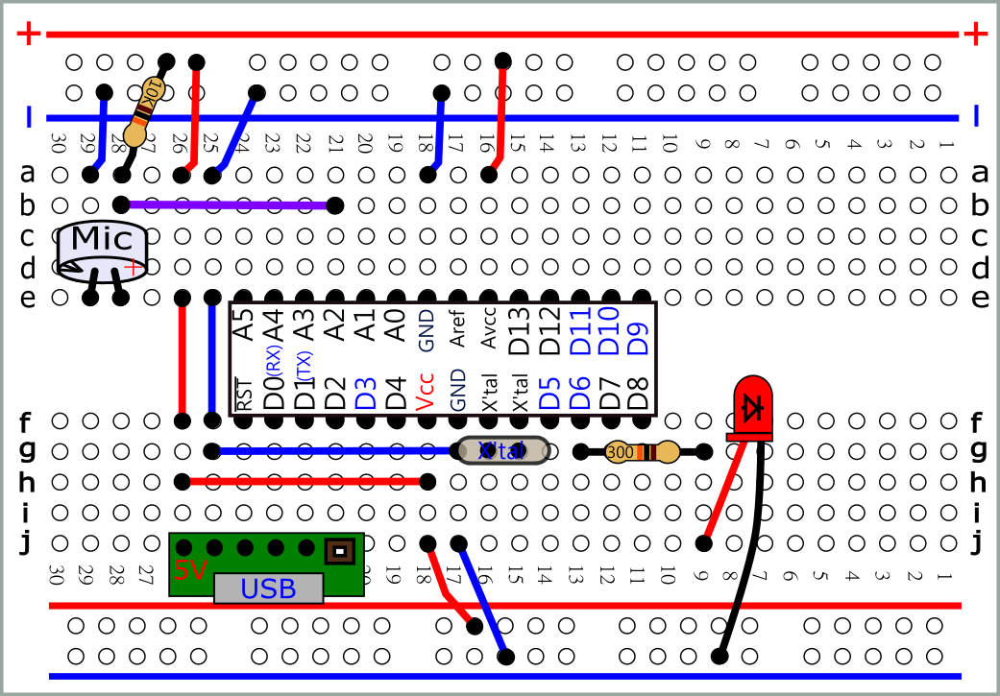
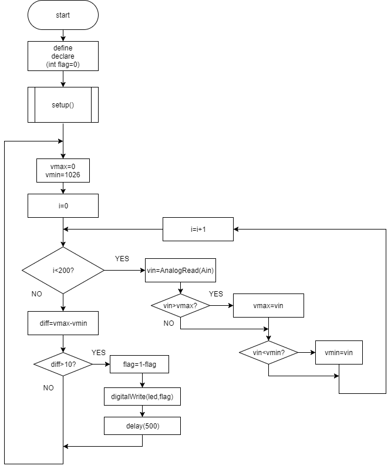
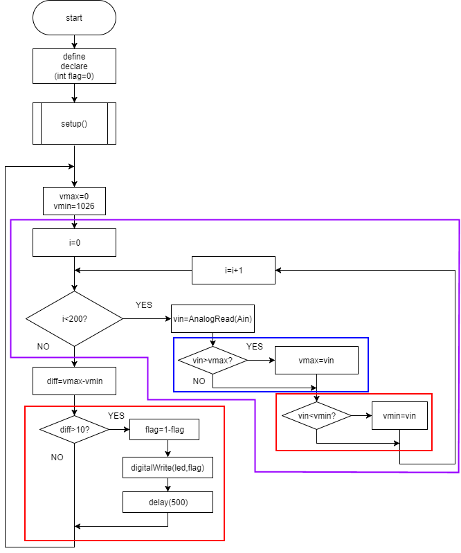
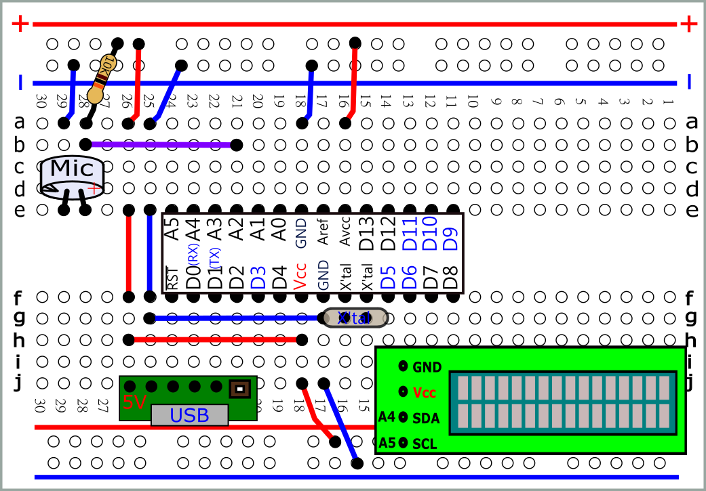

 svg |
| //1.Serial
port 測試選擇電阻 (正常時vin落在500~600) #define Ain A2 int vin; int diff; int vmax; int vmin; void setup() { Serial.begin(9600); } void loop() { vmax=0; vmin=1026; for(int i=0;i<200;i++){ vin=analogRead(Ain); if(vin>vmax) vmax=vin; if(vin<vmin) vmin=vin; } diff=vmax-vmin; Serial.print("vmax="); Serial.print(vmax); Serial.print(" vmin="); Serial.print(vmin); Serial.print(" diff="); Serial.println(diff); delay(500); } |
 svg |
| //2.a
聲控LED #define Ain A2 #define led 6 int vin; int diff; int vmax; int vmin; void setup() { Serial.begin(9600); pinMode(led,OUTPUT); } void loop() { vmax=0; vmin=1026; for(int i=0;i<200;i++){ vin=analogRead(Ain); if(vin>vmax) vmax=vin; if(vin<vmin) vmin=vin; } diff=vmax-vmin; Serial.print("vmax="); Serial.print(vmax); Serial.print(" vmin="); Serial.print(vmin); Serial.print(" diff="); Serial.println(diff); if(diff>10){ //可調靈敏度 digitalWrite(led,HIGH); delay(3000); digitalWrite(led,LOW); } //紅色部分 測試完成後可刪除 |
| //2.b
聲控開關 LED #define Ain A2 #define led 6 int vin; int diff; int vmax; int vmin; int flag=0; void setup() { Serial.begin(9600); pinMode(led,OUTPUT); digitalWrite(led,flag); } void loop() { vmax=0; vmin=1026; for(int i=0;i<200;i++){ vin=analogRead(Ain); if(vin>vmax) vmax=vin; if(vin<vmin) vmin=vin; } diff=vmax-vmin; Serial.print("vmax="); Serial.print(vmax); Serial.print(" vmin="); Serial.print(vmin); Serial.print(" diff="); Serial.println(diff); if(diff>10){ //可調靈敏度 flag=1-flag; digitalWrite(led,flag); delay(500);//why? 註解掉 吹吹看 } } //紅色部分 測試完成後可刪除 |
 |
 |
 svg |
| //
3. LCD #define Ain A2 #include <Wire.h> #include <LiquidCrystal_I2C.h> LiquidCrystal_I2C lcd(0x3F,16,2); int vin; int diff; int vmax; int vmin; void setup() { lcd.init(); // initialize the lcd lcd.backlight(); lcd.setCursor(0, 0) ; } void loop() { vmax=0; vmin=1026; for(int i=0;i<200;i++){ vin=analogRead(Ain); if(vin>vmax) vmax=vin; if(vin<vmin) vmin=vin; } diff=vmax-vmin; lcd.clear(); lcd.setCursor(0, 0) ; lcd.print(diff); if(diff>100){ //可調靈敏度 lcd.setCursor(0, 1) ; lcd.print(" "); lcd.setCursor(0, 1) ; lcd.print(diff); delay(3000); } delay(200); } |